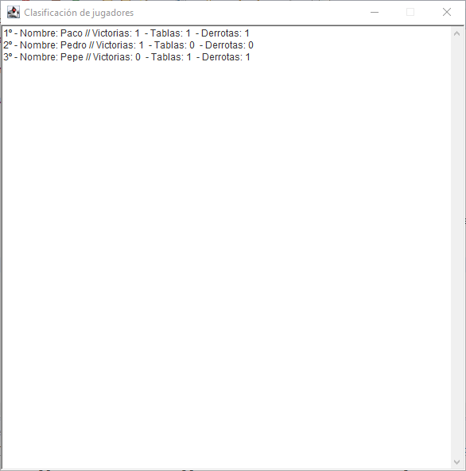

Programa Juego de Ajedrez

Opción Clasificación
Desde esta opción podemos acceder a una ventana desde la cual podemos obtener la
información de los Jugadores de tal modo que se nos mostrarán por orden de mejores
calificaciones, además de información sobre todos sus encuentros.
Aspecto de la tabla de información de las mejores clasificaciones.
